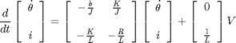
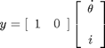
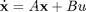
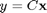
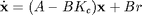
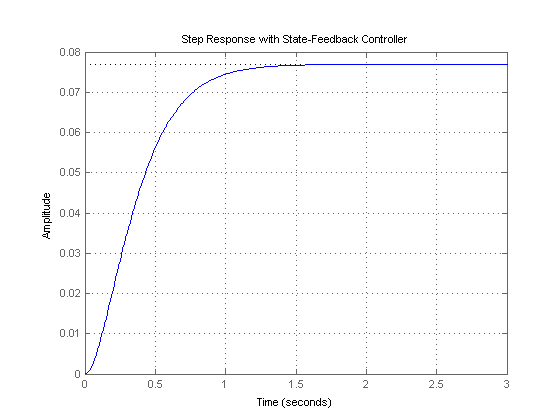
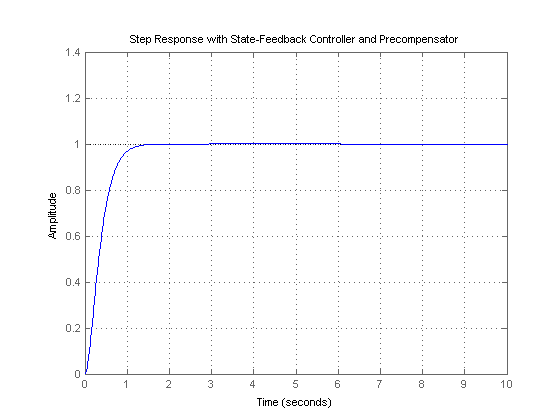

DC Motor Speed: State-Space Methods for Controller Design
Key MATLAB commands used in this tutorial are: ss , >order , rank , ctrb , place , step
Contents
From the main problem, the dynamic equations in state-space form are given below.
(1)
(2)
For the original problem setup and the derivation of the above equations, please refer to the DC Motor Speed: System Modeling page. These state-space equations have the standard form shown below where the state vector x = [ theta_dot i ] and the input u = V.
(3)
(4)
For a 1-rad/sec step reference, the design criteria are the following.
- Settling time less than 2 seconds
- Overshoot less than 5%
- Steady-stage error less than 1%
Now let's design a controller using the methods introduced in the Introduction: State-Space Methods for Controller Design page. Create a new m-file and type in the following commands.
J = 0.01;
b = 0.1;
K = 0.01;
R = 1;
L = 0.5;
A = [-b/J K/J
-K/L -R/L];
B = [0
1/L];
C = [1 0];
D = 0;
sys = ss(A,B,C,D);
Designing the full-state feedback controller
Since both of the state variables in our problem are easy to measure (simply add an ammeter for current and a tachometer for the speed), we can design a full-state feedback controller for the system without worrying about having to add an observer. The control law for a full-state feedback system has the form u = r - Kc x and the associated schematic is shown below.

Recall that the characteristic polynomial for this closed-loop system is the determinant of sI - (A - B*Kc) where s is the Laplace variable. Since the matrices A and B*Kc are both 2x2 matrices, there should be 2 poles for the system. This fact can be verified with the MATLAB command order. If the given system is controllable, then by designing a full-state feedback controller we can move these two poles anywhere we'd like. Whether the given system is controllable or not can be determined by checking the rank of the controllability matrix [ B AB A^2B ...]. The MATLAB command ctrb constructs the controllability matrix given matrices A and B. Additionally, the command rank determines the rank of a given matrix. The following commands executed at the command line will verify the system's order and whether or not the system is controllable.
sys_order = order(sys) sys_rank = rank(ctrb(A,B))
sys_order =
2
sys_rank =
2
From the above, we know that our system is controllable since the controllability matrix is full rank. We will first place the poles at -5+i and -5-i (note that this corresponds to a zeta = 0.98 which gives close to 0% overshoot and a sigma = 5 which provides a 0.8 second settling time). Once we have determined the pole locations we desire, we can use the MATLAB commands place or acker to determine the controller gain matrix, Kc, to achieve these poles. We will use the command place since it is numerically better conditioned than acker. However, if we wished to place a pole with multiplicity greater than the rank of the matrix B, then we would have to use the command acker. Add the following code to the end of your m-file. Running in the command window will generate the feedback gain matrix output below.
p1 = -5 + 1i; p2 = -5 - 1i; Kc = place(A,B,[p1 p2])
Kc = 12.9900 -1.0000
Referring back to the state-space equations at the top of the page, we see that substituting the state-feedback law u = r - Kc x for u leads to the following expression.
(5)
(6)
We can then see the closed-loop response by simply adding the following lines to the end of your m-file. Running your m-file in the command window will then give the plot shown below.
t = 0:0.01:3;
sys_cl = ss(A-B*Kc,B,C,D);
step(sys_cl,t)
grid
title('Step Response with State-Feedback Controller')
 Adding a precompensator
From this plot we see that the steady-state error is too large. One approach for eliminating the steady-state error is to simply scale the input so that the output in turn is scaled to the desired level. This is a little challenging in our example because we have two states to consider. Therefore, we need to compute what the steady-state values of both states should be, multiply them by the chosen gain Kc, and use the result as our "reference" for computing the input u. This can be done in one step by adding a constant gain precompensator Nbar after the reference as shown in the following schematic.

We can find this Nbar factor by employing the used-defined function rscale.m as shown below.
Nbar = rscale(sys,Kc)
Nbar = 13.0000
Note that the function rscale.m is not a standard function in MATLAB. You will have to download it and place it in your current directory. Click here for further information. Now you can plot the step response by adding the above and following lines of code to your m-file and re-running at the command line.
t = 0:0.01:10;
step(sys_cl*Nbar,t)
grid
title('Step Response with State-Feedback Controller and Precompensator')
 This time, the steady-state error is much less than 1%, and all the other design criteria have been met as well.
Note that the precompensator Nbar employed above is calculated based on the model of the plant and further that the precompensator is located outside of the feedback loop. Therefore, if there are errors in the model (or unknown disturbances) the precompensator will not correct for them and there will be steady-state error. You may recall that the addition of integral control may also be used to eliminate steady-state error, even in the presence of model uncertainty and step disturbances. For an example of how to implement integral control in the state space setting, see the DC Motor Position: State-Space Methods for Controller Design example. The tradeoff with using integral control is that the error must first develop before it can be corrected for, therefore, the system may be slow to respond. The precompensator on the other hand is able to anticipitate the steady-state offset using knowledge of the plant model. A useful technique is to combine the precompensator with integral control to leverage the advantages of each approach.